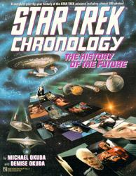
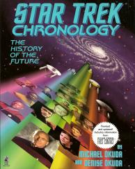

Star Trek Chronology |
|
|
|  | |
|  |
| AUT | Michael Okuda Denise Okuda |
| PAG | 184 (seconda edizione) 342 (seconda edizione) |
| EDI | Pocket Books, 1993 (prima edizione) Pocket Books, 1996 (seconda edizione) |
| ISBN | 0-671-79611-9 (prima edizione) 0-671-53610-9 (seconda edizione) |
La cronologia degli eventi dell'universo Trek aggiornata fino alla terza
stagione di Deep Space Nine
e alla seconda stagione di Voyager.
Non è aggiornatissima, ma è una guida comunque essenziale per capire lo
sviluppo dell'universo di Star Trek.
La seconda edizione è aggiornata a First Contact.